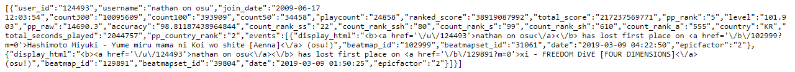
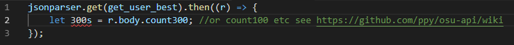

to request content from the osu site you have to use the osu api
one can easily use it for more reference check
osu api wiki
to request content you have to use for example:
https://osu.ppy.sh/api/get_user?k=YOURTOKEN&u=nathan%20on%20osu
this would output

notice: never, and i mean NEVER give your token away!
the formula for accuracy calculation is:
((300s * 300 + 100s * 100 + 50s * 50 + misses * 0)/((300s + 100s + 50s + misses) * 300) * 100)
getting the hits is fairly easy cause they can just be requested from the json - non working js example:

the bloodcat api is easy to use and can be requested in the same way as the osu api example:
https://bloodcat.com/osu/?mod=json&q=sotarks
would output: